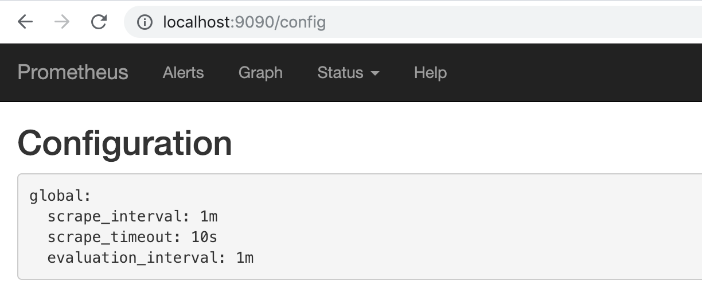

使用Operator管理Prometheus
创建Prometheus实例
当集群中已经安装Prometheus Operator之后，对于部署Prometheus Server实例就变成了声明一个Prometheus资源，如下所示，我们在Monitoring命名空间下创建一个Prometheus实例：
apiVersion: monitoring.coreos.com/v1
kind: Prometheus
metadata:
name: inst
namespace: monitoring
spec:
resources:
requests:
memory: 400Mi
将以上内容保存到prometheus-inst.yaml文件，并通过kubectl进行创建：
$ kubectl create -f prometheus-inst.yaml
prometheus.monitoring.coreos.com/inst-1 created
此时，查看monitoring命名空间下的statefulsets资源，可以看到Prometheus Operator自动通过Statefulset创建的Prometheus实例：
$ kubectl -n monitoring get statefulsets
NAME DESIRED CURRENT AGE
prometheus-inst 1 1 1m
查看Pod实例：
$ kubectl -n monitoring get pods
NAME READY STATUS RESTARTS AGE
prometheus-inst-0 3/3 Running 1 1m
prometheus-operator-6db8dbb7dd-2hz55 1/1 Running 0 45m
通过port-forward访问Prometheus实例:
$ kubectl -n monitoring port-forward statefulsets/prometheus-inst 9090:9090
通过http://localhost:9090可以在本地直接打开Prometheus Operator创建的Prometheus实例。查看配置信息，可以看到目前Operator创建了只包含基本配置的Prometheus实例：

使用ServiceMonitor管理监控配置
修改监控配置项也是Prometheus下常用的运维操作之一，为了能够自动化的管理Prometheus的配置，Prometheus Operator使用了自定义资源类型ServiceMonitor来描述监控对象的信息。
这里我们首先在集群中部署一个示例应用，将以下内容保存到example-app.yaml，并使用kubectl命令行工具创建：
kind: Service
apiVersion: v1
metadata:
name: example-app
labels:
app: example-app
spec:
selector:
app: example-app
ports:
- name: web
port: 8080
---
apiVersion: apps/v1
kind: Deployment
metadata:
name: example-app
spec:
selector:
matchLabels:
app: example-app
replicas: 3
template:
metadata:
labels:
app: example-app
spec:
containers:
- name: example-app
image: fabxc/instrumented_app
ports:
- name: web
containerPort: 8080
示例应用会通过Deployment创建3个Pod实例，并且通过Service暴露应用访问信息。
$ kubectl get pods
NAME READY STATUS RESTARTS AGE
example-app-94c8bc8-l27vx 2/2 Running 0 1m
example-app-94c8bc8-lcsrm 2/2 Running 0 1m
example-app-94c8bc8-n6wp5 2/2 Running 0 1m
在本地同样通过port-forward访问任意Pod实例
$ kubectl port-forward deployments/example-app 8080:8080
访问本地的http://localhost:8080/metrics实例应用程序会返回以下样本数据：
# TYPE codelab_api_http_requests_in_progress gauge
codelab_api_http_requests_in_progress 3
# HELP codelab_api_request_duration_seconds A histogram of the API HTTP request durations in seconds.
# TYPE codelab_api_request_duration_seconds histogram
codelab_api_request_duration_seconds_bucket{method="GET",path="/api/bar",status="200",le="0.0001"} 0
为了能够让Prometheus能够采集部署在Kubernetes下应用的监控数据，在原生的Prometheus配置方式中，我们在Prometheus配置文件中定义单独的Job，同时使用kubernetes_sd定义整个服务发现过程。而在Prometheus Operator中，则可以直接声明一个ServiceMonitor对象，如下所示：
apiVersion: monitoring.coreos.com/v1
kind: ServiceMonitor
metadata:
name: example-app
namespace: monitoring
labels:
team: frontend
spec:
namespaceSelector:
matchNames:
- default
selector:
matchLabels:
app: example-app
endpoints:
- port: web
通过定义selector中的标签定义选择监控目标的Pod对象，同时在endpoints中指定port名称为web的端口。默认情况下ServiceMonitor和监控对象必须是在相同Namespace下的。在本示例中由于Prometheus是部署在Monitoring命名空间下，因此为了能够关联default命名空间下的example对象，需要使用namespaceSelector定义让其可以跨命名空间关联ServiceMonitor资源。保存以上内容到example-app-service-monitor.yaml文件中，并通过kubectl创建：
$ kubectl create -f example-app-service-monitor.yaml
servicemonitor.monitoring.coreos.com/example-app created
如果希望ServiceMonitor可以关联任意命名空间下的标签，则通过以下方式定义：
spec:
namespaceSelector:
any: true
如果监控的Target对象启用了BasicAuth认证，那在定义ServiceMonitor对象时，可以使用endpoints配置中定义basicAuth如下所示：
apiVersion: monitoring.coreos.com/v1
kind: ServiceMonitor
metadata:
name: example-app
namespace: monitoring
labels:
team: frontend
spec:
namespaceSelector:
matchNames:
- default
selector:
matchLabels:
app: example-app
endpoints:
- basicAuth:
password:
name: basic-auth
key: password
username:
name: basic-auth
key: user
port: web
其中basicAuth中关联了名为basic-auth的Secret对象，用户需要手动将认证信息保存到Secret中:
apiVersion: v1
kind: Secret
metadata:
name: basic-auth
data:
password: dG9vcg== # base64编码后的密码
user: YWRtaW4= # base64编码后的用户名
type: Opaque
关联Promethues与ServiceMonitor
Prometheus与ServiceMonitor之间的关联关系使用serviceMonitorSelector定义，在Prometheus中通过标签选择当前需要监控的ServiceMonitor对象。修改prometheus-inst.yaml中Prometheus的定义如下所示： 为了能够让Prometheus关联到ServiceMonitor，需要在Pormtheus定义中使用serviceMonitorSelector，我们可以通过标签选择当前Prometheus需要监控的ServiceMonitor对象。修改prometheus-inst.yaml中Prometheus的定义如下所示：
apiVersion: monitoring.coreos.com/v1
kind: Prometheus
metadata:
name: inst
namespace: monitoring
spec:
serviceMonitorSelector:
matchLabels:
team: frontend
resources:
requests:
memory: 400Mi
将对Prometheus的变更应用到集群中：
$ kubectl -n monitoring apply -f prometheus-inst.yaml
此时，如果查看Prometheus配置信息，我们会惊喜的发现Prometheus中配置文件自动包含了一条名为monitoring/example-app/0的Job配置：
global:
scrape_interval: 30s
scrape_timeout: 10s
evaluation_interval: 30s
external_labels:
prometheus: monitoring/inst
prometheus_replica: prometheus-inst-0
alerting:
alert_relabel_configs:
- separator: ;
regex: prometheus_replica
replacement: $1
action: labeldrop
rule_files:
- /etc/prometheus/rules/prometheus-inst-rulefiles-0/*.yaml
scrape_configs:
- job_name: monitoring/example-app/0
scrape_interval: 30s
scrape_timeout: 10s
metrics_path: /metrics
scheme: http
kubernetes_sd_configs:
- role: endpoints
namespaces:
names:
- default
relabel_configs:
- source_labels: [__meta_kubernetes_service_label_app]
separator: ;
regex: example-app
replacement: $1
action: keep
- source_labels: [__meta_kubernetes_endpoint_port_name]
separator: ;
regex: web
replacement: $1
action: keep
- source_labels: [__meta_kubernetes_endpoint_address_target_kind, __meta_kubernetes_endpoint_address_target_name]
separator: ;
regex: Node;(.*)
target_label: node
replacement: ${1}
action: replace
- source_labels: [__meta_kubernetes_endpoint_address_target_kind, __meta_kubernetes_endpoint_address_target_name]
separator: ;
regex: Pod;(.*)
target_label: pod
replacement: ${1}
action: replace
- source_labels: [__meta_kubernetes_namespace]
separator: ;
regex: (.*)
target_label: namespace
replacement: $1
action: replace
- source_labels: [__meta_kubernetes_service_name]
separator: ;
regex: (.*)
target_label: service
replacement: $1
action: replace
- source_labels: [__meta_kubernetes_pod_name]
separator: ;
regex: (.*)
target_label: pod
replacement: $1
action: replace
- source_labels: [__meta_kubernetes_service_name]
separator: ;
regex: (.*)
target_label: job
replacement: ${1}
action: replace
- separator: ;
regex: (.*)
target_label: endpoint
replacement: web
action: replace
不过，如果细心的读者可能会发现，虽然Job配置有了，但是Prometheus的Target中并没包含任何的监控对象。查看Prometheus的Pod实例日志，可以看到如下信息：
level=error ts=2018-12-15T12:52:48.452108433Z caller=main.go:240 component=k8s_client_runtime err="github.com/prometheus/prometheus/discovery/kubernetes/kubernetes.go:300: Failed to list *v1.Endpoints: endpoints is forbidden: User \"system:serviceaccount:monitoring:default\" cannot list endpoints in the namespace \"default\""
自定义ServiceAccount
由于默认创建的Prometheus实例使用的是monitoring命名空间下的default账号，该账号并没有权限能够获取default命名空间下的任何资源信息。
为了修复这个问题，我们需要在Monitoring命名空间下为创建一个名为Prometheus的ServiceAccount，并且为该账号赋予相应的集群访问权限。
apiVersion: v1
kind: ServiceAccount
metadata:
name: prometheus
namespace: monitoring
---
apiVersion: rbac.authorization.k8s.io/v1beta1
kind: ClusterRole
metadata:
name: prometheus
rules:
- apiGroups: [""]
resources:
- nodes
- services
- endpoints
- pods
verbs: ["get", "list", "watch"]
- apiGroups: [""]
resources:
- configmaps
verbs: ["get"]
- nonResourceURLs: ["/metrics"]
verbs: ["get"]
---
apiVersion: rbac.authorization.k8s.io/v1beta1
kind: ClusterRoleBinding
metadata:
name: prometheus
roleRef:
apiGroup: rbac.authorization.k8s.io
kind: ClusterRole
name: prometheus
subjects:
- kind: ServiceAccount
name: prometheus
namespace: monitoring
将以上内容保存到prometheus-rbac.yaml文件中，并且通过kubectl创建相应资源：
$ kubectl -n monitoring create -f prometheus-rbac.yaml
serviceaccount/prometheus created
clusterrole.rbac.authorization.k8s.io/prometheus created
clusterrolebinding.rbac.authorization.k8s.io/prometheus created
在完成ServiceAccount创建后，修改prometheus-inst.yaml，并添加ServiceAccount如下所示：
apiVersion: monitoring.coreos.com/v1
kind: Prometheus
metadata:
name: inst
namespace: monitoring
spec:
serviceAccountName: prometheus
serviceMonitorSelector:
matchLabels:
team: frontend
resources:
requests:
memory: 400Mi
保存Prometheus变更到集群中：
$ kubectl -n monitoring apply -f prometheus-inst.yaml
prometheus.monitoring.coreos.com/inst configured
等待Prometheus Operator完成相关配置变更后，此时查看Prometheus，我们就能看到当前Prometheus已经能够正常的采集实例应用的相关监控数据了。